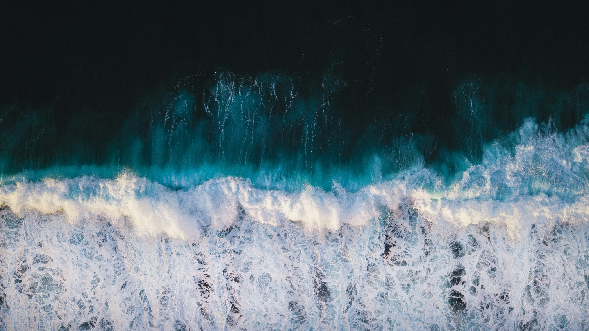
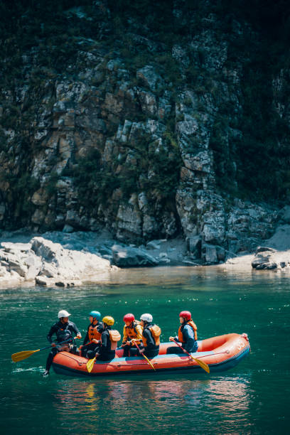
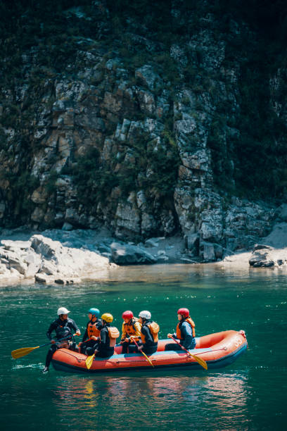
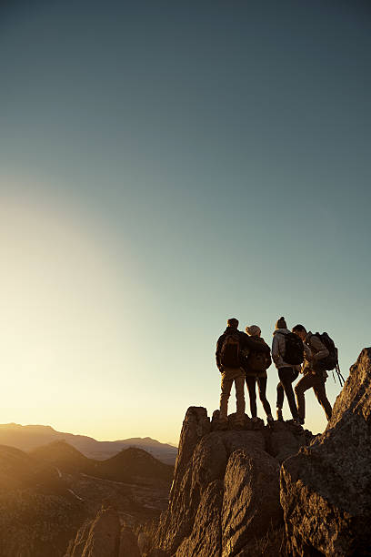
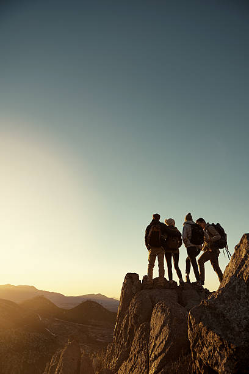

White Water Rafting
History
White Water Rafting was founded in 2022 in Bucaramanga by a group of friends passionate
about extreme sports and nature. The company was born with the goal of offering thrilling
rafting adventures in the nearby rivers, providing unique and adrenaline-filled experiences
for outdoor enthusiasts. From its humble beginnings, White Water Rafting quickly grew, gaining
recognition for its commitment to safety and customer enjoyment. Today, it has become the go-
to destination for those looking to challenge the rapids and enjoy the natural beauty of
Bucaramanga and its surroundings.
Adventure Awaits You!
 

 
